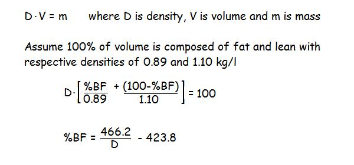

Fluid Mechanics
Specific Gravity and Human Body Composition:

Specific gravity is another term for density and can be defined as the weight of an object in the air divided by the buoyant force (in fresh water). One way to measure the buoyant force is to take the difference between the weight of the object in the air and the weight of the submerged object. Hydrostatic weighing is a common method to determine the density or specific gravity of the human body. Another method is to use an air chamber that measures the volume of the body which can then be converted to density by diving the volume into the whole body mass.
The human body is composed of various tissues of different densities such as bone, fat and lean tissues like muscle and organs. Human body composition is concerned with quantifying the amount of body fat as a percentage of the total body mass. This has been done using a two-component model of the human body assuming a density value of fat and another density value for lean tissue. A common assumption for the density of fat is 0.89 kg/l and 1.10 kg/l for the lean tissues. If the whole body density has been determined from hydrostatic weighing or a volume measurement, the %body fat can be estimated using:

While this estimate has been considered the most valid measurement of body composition for many years and other methods such as skinfold measurements have been compared to it, it must be recognized that it depends on the validity of the assumed tissues densities. Individuals with a higher ratio of bone to muscle mass should have a higher value than those with a low bone to muscle mass ratio. Yet the above method assumes a value of 1.10 kg/l for both. Newer methods involving medical imaging like Dual X-ray Absorptiometry (DXA) allow the measurement of bone, fat and lean tissue more directly but it is not yet in common use for body composition.